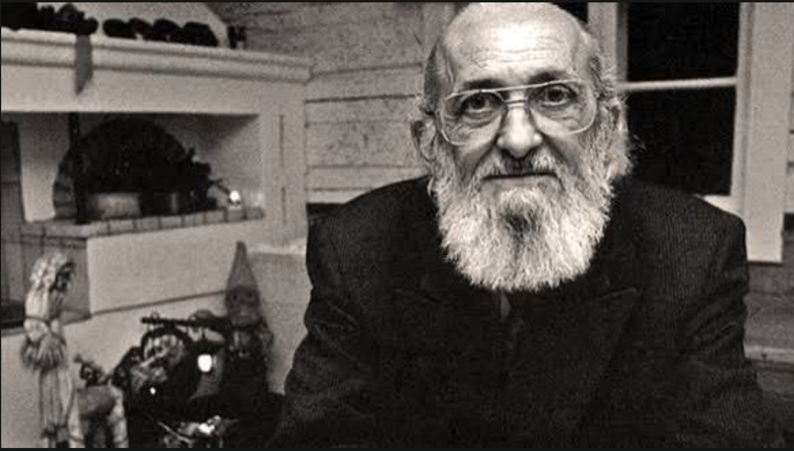
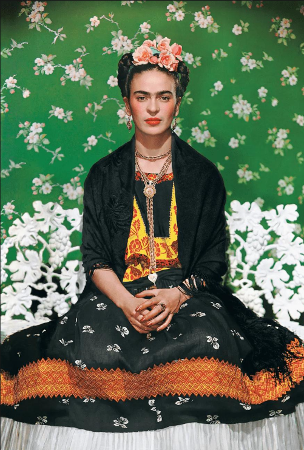
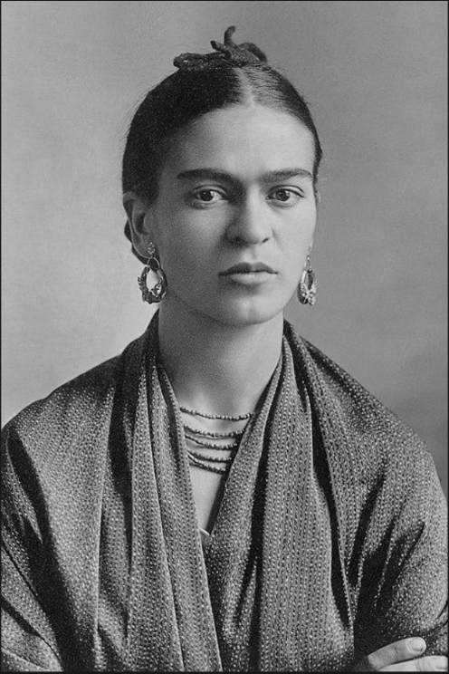
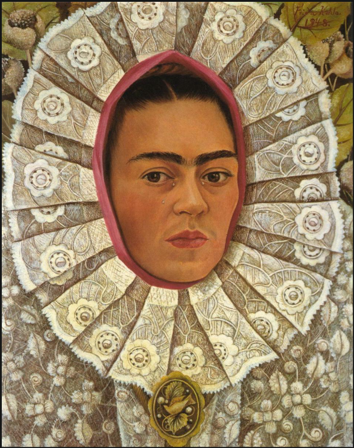
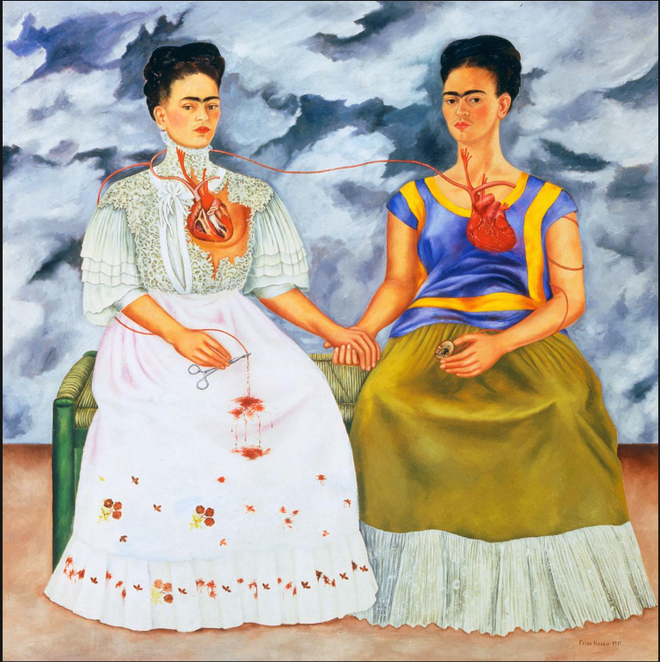

Decisioni, regole, voce: imposte dall'esterno. La persona è ridotta a strumento, a proprietà.
Riconquista dell'umanità. La persona diventa fonte delle proprie scelte e della propria storia.

Pedagogista brasiliano, padre della pedagogia critica. Figlio della povertà del Nordest brasiliano, capì presto che l'analfabetismo non era ignoranza ma oppressione strutturale. La sua opera cambiò il modo di pensare all'educazione nel mondo intero.
Non si tratta solo di povertà economica.
L'oppressione può essere:
Nella pedagogia interculturale possiamo riconoscere come "oppressi" diverse categorie di persone:
Debolezza intrinseca o strutturale, percepita come poco modificabile. Connotazione statica e identitaria.
Dipende dal contesto. Temporanea, trasformabile. Espone al rischio ma anche al cambiamento.
Cresciuta sotto il controllo dei talebani, ha rivendicato pubblicamente il diritto delle bambine all'istruzione. Sopravvissuta a un attentato nel 2012, è diventata simbolo globale della lotta per l'educazione come strumento di trasformazione sociale.
Nata Marie Jana Korbelová, fugge con la famiglia dalle persecuzioni della Seconda Guerra Mondiale. Trasforma una condizione di vulnerabilità e perdita in un percorso di leadership: diventerà la prima donna Segretario di Stato degli Stati Uniti.
Per secoli escluse da istruzione, lavoro autonomo, partecipazione politica. Le strutture lasciano tracce.
Ruoli predefiniti — cura, sacrificio, minore ambizione. Uscirne incontra resistenze esterne e interne.
Meno accesso a risorse economiche, posizioni di potere, reti di supporto. Si parte con meno strumenti.
Affermarsi come individui autonomi e rispondere alle aspettative tradizionali. Tenere insieme entrambe.

Pittrice messicana, icona globale di resistenza e autodeterminazione. Trasformò il dolore fisico e le oppressioni di genere, cultura e classe in arte potente e politica. La sua vita fu un atto di emancipazione radicale e quotidiana.

Baffi, sopracciglia folte, cicatrici senza ritocchi. Ridefinisce la bellezza femminile secondo i propri termini — non per compiacere lo sguardo altrui, ma per affermare la propria esistenza.

Abiti tehuane, gioielli precolombiani, capelli intrecciati: orgoglio delle radici indigene messicane. Rifiuto dell'ideale europeo imposto. L'apparenza come atto di resistenza culturale.

Dipinto dopo il divorzio da Diego Rivera: due versioni di sé con cuori aperti e interconnessi. La scissione interiore resa visibile. La vulnerabilità non è debolezza — è coraggio.
Frida non si emancipa seguendo modelli esterni, ma costruendo un'identità autentica che tiene insieme due dimensioni: il suo essere donna, il suo vissuto di dolore fisico e psicologico, ma soprattutto il legame profondo con la cultura messicana. Sceglie di valorizzare le proprie radici indigene in un'epoca in cui il modello dominante guardava all'Europa.
Mostra, attraverso questi quadri, come l'identità non sia mai pura o statica, ma il risultato di incontri, scambi e contaminazioni.
Il suo esempio è ancora attuale: ci ricorda che, oggi, in una società globalizzata, l'emancipazione non passa dall'omologazione, ma dalla capacità di riconoscere e valorizzare la propria identità.